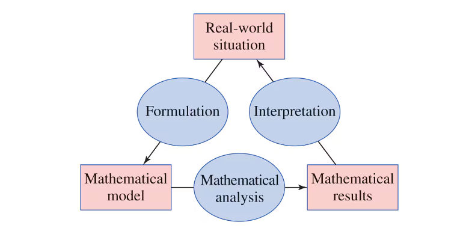
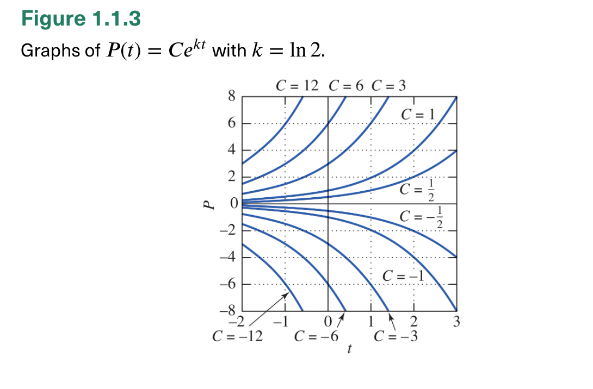

1.1: Differential Equations and Mathematical Models
Most interesting natural phenomena involve change, and the laws
governing these phenomena are written in mathematical equations relating
changing quantities.
An equation relating an unknown function and one or more of its
derivatives is called a differential equation.
The order is the order of the highest derivative appearing
in the equation. An nth order
ODE for y(x) takes
the form F(x, y, y′, y″, ..., y(n)) = 0.
An ordinary differential equation (ODE) involves an unknown
function of one input/independent variable.
A partial differential equation (PDE) involves an unknown
function of multiple inputs/independent variables.
We’ll study ODE for most of the course, and then use Fourier series to
solve two PDE towards the end (the heat equation and wave equation).
An autonomous ordinary differential equation has no explicit
dependence on the independent variable. The “laws of nature” (the DE)
are static in “time" (the input we often have in mind for ODE).
A differential equation will often have physical constants/ physical
parameters in addition to the independent and dependent variables —
we will discuss how useful units are in helping is formulate models!
There is a difference between checking or verifying whether an equation is satisfied versus solving it.
To check/verify whether x = 3 is a solution of 2x + 5 = 11, we substitute to see: $$2(3) + 5 \overset{?}{=} 11, \qquad 11 \overset{\checkmark}{=} 11.$$ Solving would be doing $$\begin{aligned} 2x+5 &= 11, \\ 2x &= 6, \\ x &= 3. \end{aligned}$$
Example. Verify that y(x) = Cex2
satisfies/ solves the DE $$\frac{dy}{dx} = 2xy$$ for any constant
C.
We say that, for example, y(x) = 5ex2
is a particular solution while y(x) = Cex2
is the general solution. The general solution will
contain integration constant(s).
We’ll spend most of this course studying ordinary differential
equations and systems of ordinary differential equations. We’ll study
various calculus, algebraic, linear algebra, and “complex
continuous frequency analysis" (Laplace transform) techniques,
oftentimes learning several ways to solve certain equations.
When we study the heat and wave PDE towards the end, we’ll be using
a”discrete frequency analysis" technique (Fourier series).
Discover the differential equation that describes a specified physical situation.
Find the appropriate solution of that equation (either exactly or approximately).
Interpret the solution in the applied context.
 (Figure 1.1.4 from the textbook)
A small object with variable temperature T(t) (as a function of time t) sits inside a large surrounding medium maintained at a constant temperature A. The rate of change of T(t) is proportional to the temperature difference between the object and the surrounding medium. That is, $$\frac{dT}{dt} = k (A- T)$$ for some constant k > 0.
The time rate of change of P(t), the population at time t, is proportional to the population: $$\frac{dP}{dt} = kP$$ for some constant k. It turns out the general solution is given by P(t) = Cekt, which you can easily verify.
Example. Knowing that the general solution is P(t) = Cekt, suppose that the population took one hour to double from its initial value (at t = 0) P(0) = 1000. Find the particular solution in this case.

This general solution to a first order ODE $\dfrac{dP}{dt} = (\ln 2)P$ is a
one-parameter family of functions P(t) = Cetln 2
indexed by C.
A DE “typically" has infinitely many solutions; an initial value problem”typically" has one particular solution. An initial value problem consists of a DE along with initial condition(s).
Instead of the “standard" time rate of change P′(t), we could consider the relative rate of change (that is, normalized by population) : $$\frac{P'(t)}{P(t)} = \frac 1 P \frac{dP}{dt}.$$
Let M > 0 represent the carrying capacity. The relative rate of change of P(t), the population at time t, is proportional to the “available space": $$\frac{1}{P} \frac{dP}{dt} = k(M-P) \qquad \mbox{ and so } \frac{dP}{dt} = kP(M-P)$$ for some constant k > 0.
Example. A function y = g(x) is described by some geometric property of its graph. Write a differential equation of the form $\frac{dy}{dx} = f(x,y)$ having the function g as a solution.
The slope of the graph of g at (x, y) is the sum of x and y.
The line tangent to the graph of g at the point (x, y) intersects the x-axis at the point (x/2, 0).
Every straight line normal to the graph of g passes through the point (0, 1).
Example. Show that the two-parameter family of functions y(x) = Acos (3x) + Bsin (3x) indexed by A, B solves the ODE y″ + 9y = 0.
The normal form of an nth order ODE is y(n) = G(x, y, y′, ..., y(n − 1)). Typically, the general solution will be an n-parameter family of solutions, indexed by n “integration constants".
Given an initial value problem, how do we solve or find the particular solution “from scratch"? We haven’t done ANY of that yet! In Chapter 1, we’ll learn
1.4: Separation of variables for first order separable equations
1.5: Integrating factors for first order linear equations
and see the vast array of applications these techniques are useful for.